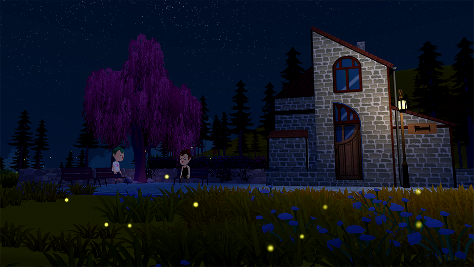

Overview
Chef Adventure is narrative game made for teens about well-being and how to achieve it, with a healthy balance of self-esteem and serenity, and how you can reach it by listening to others and to yourself.
My Roles

I worked as a Game and Level Designer for this Project. My focus was the game’s pacing: alternating between dialogue heavy moments and quiet, beautiful ones, in order to reinforce the game’s theme of well-being. I also edited the trailer with Sony Vegas!